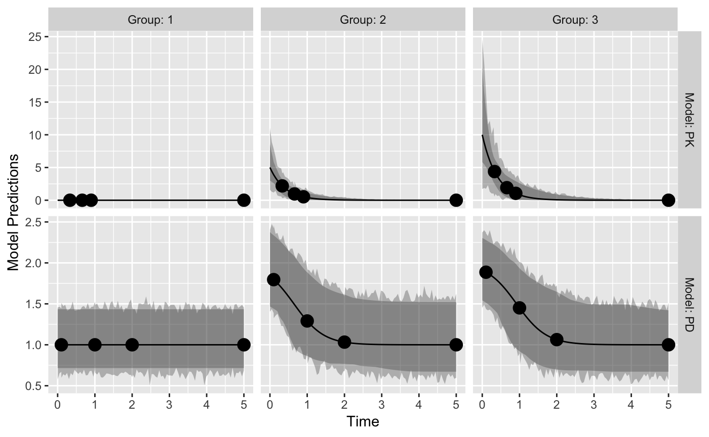
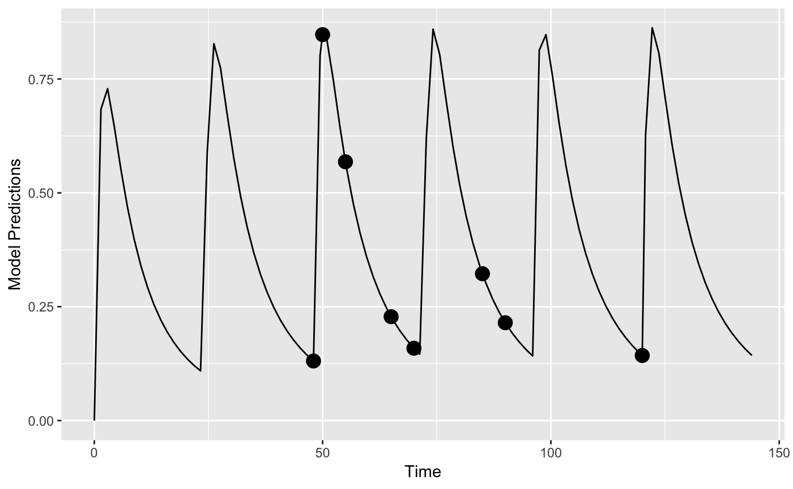
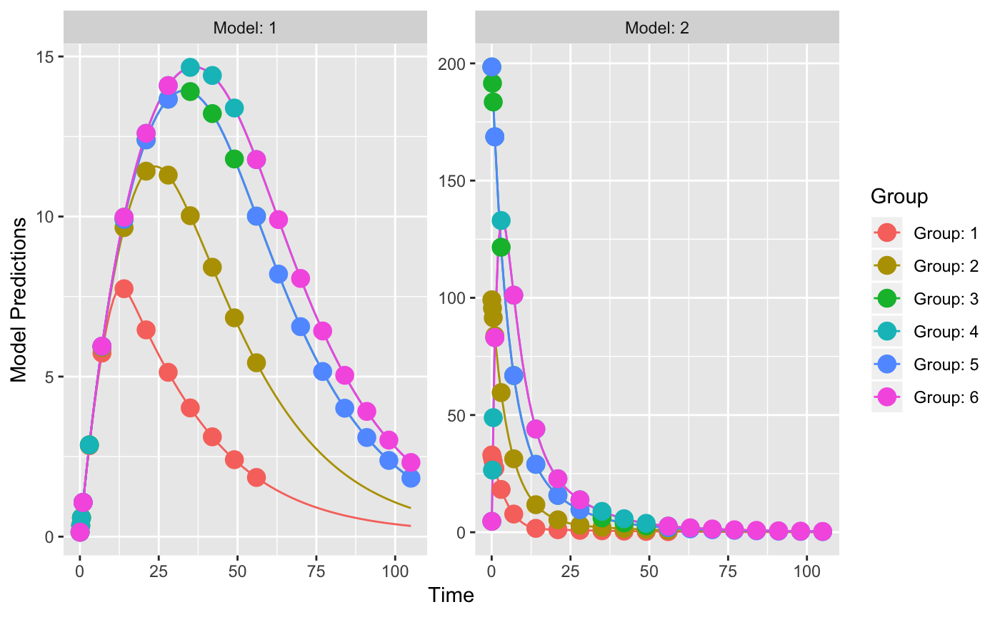
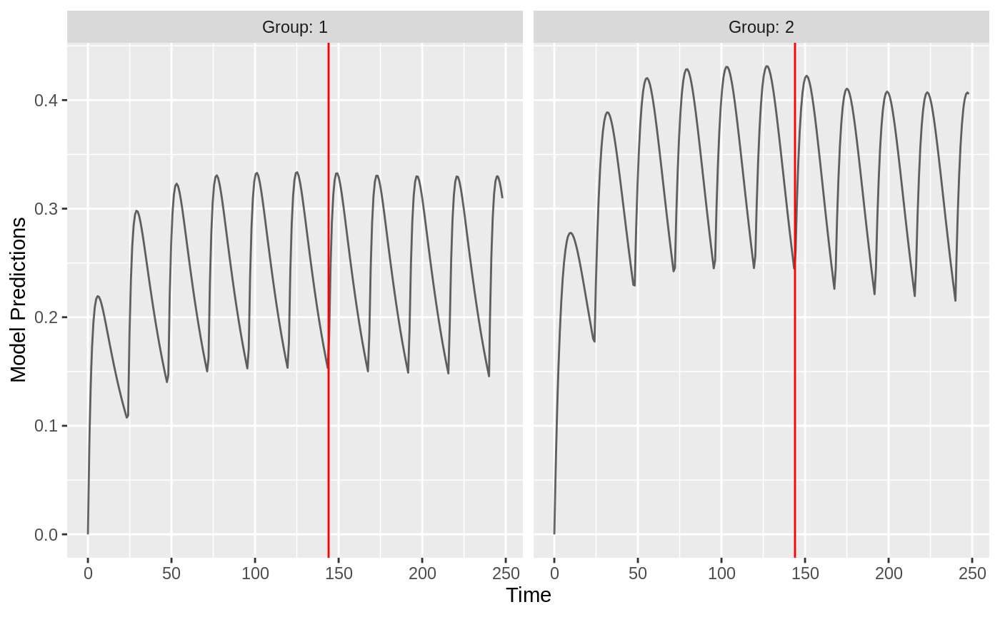
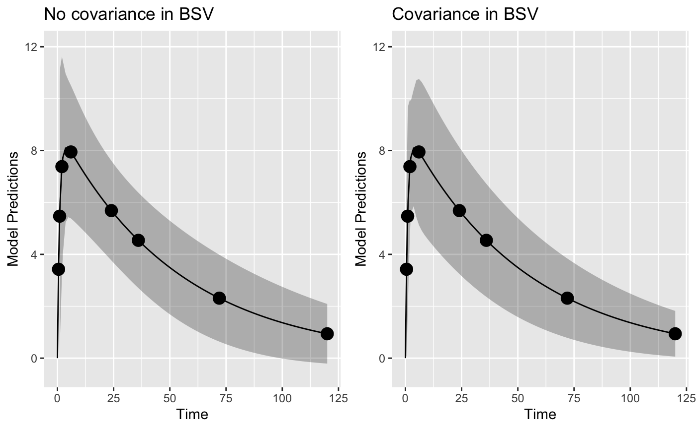
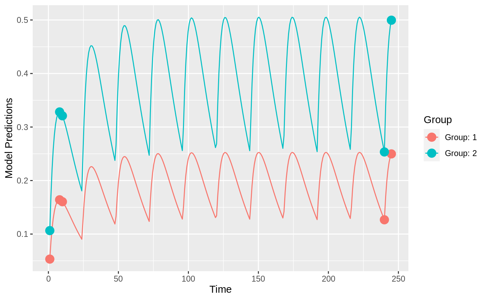
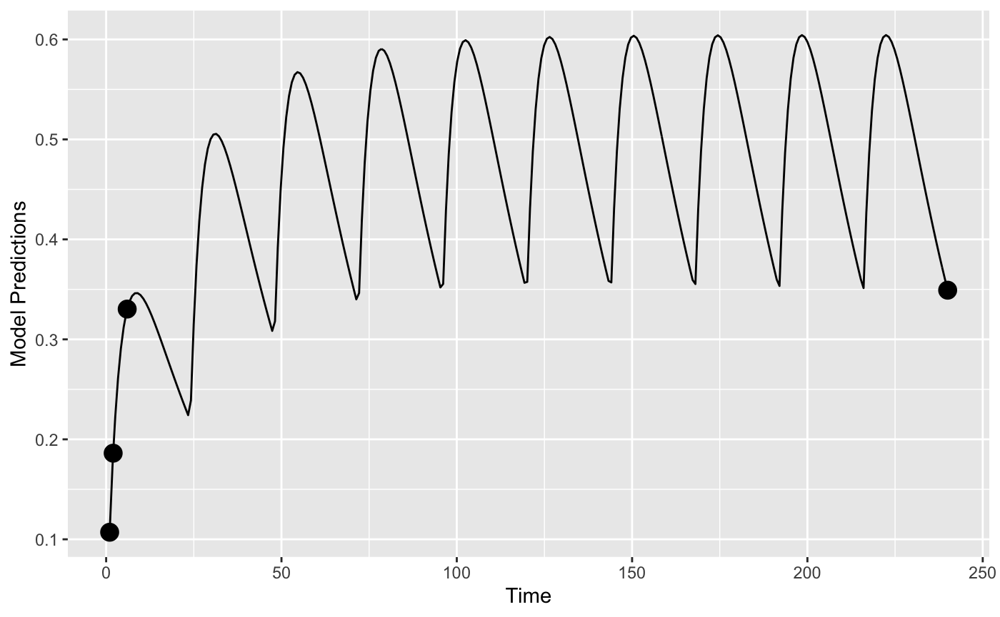
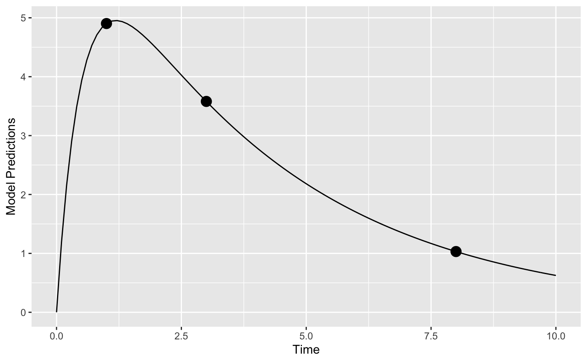

vignettes/examples.Rmd
examples.RmdIn this vignette, we try to highlight PopED features that may be useful. Only code related to specific features we would like to highlight is described here in this vignette. These features (and more) are presented as r-scripts in the “examples” folder in the PopED installation directory. You can view a list of these example files using the commands:
ex_dir <- system.file("examples", package="PopED") list.files(ex_dir) #> [1] "ex.1.a.PK.1.comp.oral.md.intro.R" #> [2] "ex.1.b.PK.1.comp.oral.md.re-parameterize.R" #> [3] "ex.1.c.PK.1.comp.oral.md.ODE.compiled.R" #> [4] "ex.10.PKPD.HCV.compiled.R" #> [5] "ex.11.PK.prior.R" #> [6] "ex.12.covariate.distributions.R" #> [7] "ex.13.shrinkage.R" #> [8] "ex.14.PK.IOV.R" #> [9] "ex.15.full.covariance.matrix.R" #> [10] "ex.2.a.warfarin.evaluate.R" #> [11] "ex.2.b.warfarin.optimize.R" #> [12] "ex.2.c.warfarin.ODE.compiled.R" #> [13] "ex.2.d.warfarin.ED.R" #> [14] "ex.2.e.warfarin.Ds.R" #> [15] "ex.3.a.PKPD.1.comp.oral.md.imax.D-opt.R" #> [16] "ex.3.b.PKPD.1.comp.oral.md.imax.ED-opt.R" #> [17] "ex.4.PKPD.1.comp.emax.R" #> [18] "ex.5.PD.emax.hill.R" #> [19] "ex.6.PK.1.comp.oral.sd.R" #> [20] "ex.7.PK.1.comp.maturation.R" #> [21] "ex.8.tmdd_qss_one_target_compiled.R" #> [22] "ex.9.PK.2.comp.oral.md.ode.compiled.R" #> [23] "HCV_ode.c" #> [24] "HCV_ode.o" #> [25] "HCV_ode.so" #> [26] "one_comp_oral_CL.c" #> [27] "one_comp_oral_CL.o" #> [28] "one_comp_oral_CL.so" #> [29] "tmdd_qss_one_target.c" #> [30] "tmdd_qss_one_target.o" #> [31] "tmdd_qss_one_target.so" #> [32] "two_comp_oral_CL.c" #> [33] "two_comp_oral_CL.o" #> [34] "two_comp_oral_CL.so"
You can then open one of the examples (for example, ex.1.a.PK.1.comp.oral.md.intro.R) using the following code
file_name <- "ex.1.a.PK.1.comp.oral.md.intro.R" ex_file <- system.file("examples",file_name,package="PopED") file.copy(ex_file,tempdir(),overwrite = T) file.edit(file.path(tempdir(),file_name))
The table below provides a check list of features for each of the 15 available examples.
| Features | Ex1 | Ex2 | Ex3 | Ex4 | Ex5 | Ex6 | Ex7 | Ex8 | Ex9 | Ex10 | Ex11 | Ex12 | Ex13 | Ex14 | Ex15 |
|---|---|---|---|---|---|---|---|---|---|---|---|---|---|---|---|
| Analytic model | X | X | X | X | X | X | X | - | - | - | X | X | X | X | X |
| ODE model | X | X | - | - | - | X | - | X | X | X | - | - | - | - | - |
| Irregular dosing | - | - | - | - | - | - | - | - | - | - | - | - | - | - | - |
| Full cov matrix W | - | - | - | - | - | - | - | - | - | - | - | - | - | - | X |
| Inter-occ variability | - | - | - | - | - | - | - | - | - | - | - | - | - | X | - |
| Discrete covariates | - | - | - | - | - | - | X | - | - | - | X | - | - | - | - |
| Continuous covariates | X | X | X | X | - | X | X | X | X | X | X | X | X | X | X |
| Multiple arms | X | - | X | X | - | - | X | X | - | - | X | X | - | X | - |
| Multi response models | - | - | X | X | - | - | - | X | - | X | - | - | - | - | - |
| Designs differ across responses |
- | - | - | X | - | - | - | X | - | - | - | - | - | - | - |
| Calculate precision of derived parameters |
- | - | - | - | - | - | - | - | - | - | - | - | - | - | - |
| Power calculation | - | - | - | - | - | - | - | - | - | - | X | - | - | - | - |
| Include previous FIM | - | - | - | - | - | - | - | - | - | - | X | - | - | - | - |
| Shrinkage/Bayesian FIM | X | X | X | X | - | - | X | - | - | X | - | - | X | - | - |
| Discrete optimization | X | X | X | - | - | X | - | X | - | - | - | - | - | X | - |
| Optimization of multi-group designs (same response) |
X | - | X | X | - | - | X | X | - | - | - | - | - | X | - |
| Different optimal sampling times between groups |
- | - | - | - | - | - | - | - | - | - | - | - | - | - | - |
| Optimization with constraining sampling times |
X | - | X | - | - | - | - | - | - | - | - | - | - | X | - |
| Optimization of subjects per group |
- | - | - | - | - | - | - | - | - | - | - | - | - | - | - |
Note: All features are available in PopED but some are not demonstrated in the supplied examples.
The full code for this example is available in ex.4.PKPD.1.comp.emax.R.
Here we define a PKPD mode using analytical equations. The PK is a one compartment model with intravenous bolus administration and linear elimination. The PD is an ordinary Emax model driven by the PK concentrations. The expected output of each measurement (PK or PD) is given in the vector model_switch (see below for details).
library(PopED) f_pkpdmodel <- function(model_switch,xt,parameters,poped.db){ with(as.list(parameters),{ y=xt MS <- model_switch # PK model CONC = DOSE/V*exp(-CL/V*xt) # PD model EFF = E0 + CONC*EMAX/(EC50 + CONC) y[MS==1] = CONC[MS==1] y[MS==2] = EFF[MS==2] return(list( y= y,poped.db=poped.db)) }) }
The error model also has to accommodate both response models.
## -- Residual Error function ## -- Proportional PK + additive PD f_Err <- function(model_switch,xt,parameters,epsi,poped.db){ returnArgs <- do.call(poped.db$model$ff_pointer,list(model_switch,xt,parameters,poped.db)) y <- returnArgs[[1]] poped.db <- returnArgs[[2]] MS <- model_switch prop.err <- y*(1+epsi[,1]) add.err <- y+epsi[,2] y[MS==1] = prop.err[MS==1] y[MS==2] = add.err[MS==2] return(list( y= y,poped.db =poped.db )) }
In the poped.db object the vector we specify model_switch in order to assign the sampling times defined in the vector xt to the PK (=1) or PD (=2) model.
poped.db <- create.poped.database( # Model ff_fun=f_pkpdmodel, fError_fun=f_Err, fg_fun=f_etaToParam, sigma=diag(c(0.15,0.015)), bpop=c(CL=0.5,V=0.2,E0=1,EMAX=1,EC50=1), d=c(CL=0.09,V=0.09,E0=0.04,EC50=0.09), # Design groupsize=20, m=3, xt = c(0.33,0.66,0.9,5,0.1,1,2,5), model_switch=c(1,1,1,1,2,2,2,2), a=list(c(DOSE=0),c(DOSE=1),c(DOSE=2)), # Design space minxt=0, maxxt=5, bUseGrouped_xt=1, maxa=c(DOSE=10), mina=c(DOSE=0))
The model predictions below show typical PK and PD profiles for three dose groups and the expected 95% prediction interval of the data. The initial design, as shown in the poped.db object, consists of 3 arms with doses of 0, 1, and 2 mg; PK sampling times are 0.33, 0.66, 0.9, and 5 hours/days; PD sampling times are 0.1, 1, 2, and 5 hours/days. With model.names=c("PK","PD") one can name the outputs in the graph.
plot_model_prediction( poped.db,PI=TRUE, facet_scales="free", separate.groups=TRUE, model.names=c("PK","PD"))

The full code for this example is available in ex.9.PK.2.comp.oral.md.ode.compiled.R.
In this example, the deSolve library needs to be installed for computing solutions to a system of differential equations. For faster solutions one can use pre-compiled code using the Rcpp library (see below).
library(deSolve)
Here we define the two compartment model in R using deSolve notation
PK.2.comp.oral.ode <- function(Time, State, Pars){ with(as.list(c(State, Pars)), { dA1 <- -KA*A1 dA2 <- KA*A1 + A3* Q/V2 -A2*(CL/V1+Q/V1) dA3 <- A2* Q/V1-A3* Q/V2 return(list(c(dA1, dA2, dA3))) }) }
Now we define the initial conditions of the ODE system A_ini with a named vector, in this case all compartments are initialized to zero c(A1=0,A2=0,A3=0). The dosing input is defined as a data.frame dose_dat referring to the named compartment var = c("A1"), the specified dose_times and value=c(DOSE*Favail) dose amounts. Note that the covariates DOSE and the regimen TAU can differ by arm and be optimized (as shown in ex.1.a.PK.1.comp.oral.md.intro.R). For more information see the help pages for ?deSolve::ode and ?deSolve::events.
ff.PK.2.comp.oral.md.ode <- function(model_switch, xt, parameters, poped.db){ with(as.list(parameters),{ # initial conditions of ODE system A_ini <- c(A1=0, A2=0, A3=0) #Set up time points to get ODE solutions times_xt <- drop(xt) # sample times times_start <- c(0) # add extra time for start of study times_dose = seq(from=0,to=max(times_xt),by=TAU) # dose times times <- unique(sort(c(times_start,times_xt,times_dose))) # combine it all # Dosing dose_dat <- data.frame( var = c("A1"), time = times_dose, value = c(DOSE*Favail), method = c("add") ) out <- ode(A_ini, times, PK.2.comp.oral.ode, parameters, events = list(data = dose_dat))#atol=1e-13,rtol=1e-13) y = out[, "A2"]/V1 y=y[match(times_xt,out[,"time"])] y=cbind(y) return(list(y=y,poped.db=poped.db)) }) }
When creating a PopED database. ff_fun should point to the function providing the solution to the ODE. Further, the names in the parameter definition (fg) function should match the parameters used in the above two functions.
poped.db <- create.poped.database( # Model ff_fun="ff.PK.2.comp.oral.md.ode", fError_fun="feps.add.prop", fg_fun="fg", sigma=c(prop=0.1^2,add=0.05^2), bpop=c(CL=10,V1=100,KA=1,Q= 3.0, V2= 40.0, Favail=1), d=c(CL=0.15^2,KA=0.25^2), notfixed_bpop=c(1,1,1,1,1,0), # Design groupsize=20, m=1, #number of groups xt=c( 48,50,55,65,70,85,90,120), # Design space minxt=0, maxxt=144, discrete_xt = list(0:144), a=c(DOSE=100,TAU=24), discrete_a = list(DOSE=seq(0,1000,by=100),TAU=8:24))
We plot the population prediction of the model for the initial design
plot_model_prediction(poped.db,model_num_points = 500)

Faster computations with Rcpp: We could also define the system using Rcpp, which will produce compiled code that should run faster (further examples in ex.2.c.warfarin.ODE.compiled.R). First we redefine the ODE system using Rcpp.
library(Rcpp) cppFunction( 'List two_comp_oral_ode_Rcpp(double Time, NumericVector A, NumericVector Pars) { int n = A.size(); NumericVector dA(n); double CL = Pars[0]; double V1 = Pars[1]; double KA = Pars[2]; double Q = Pars[3]; double V2 = Pars[4]; dA[0] = -KA*A[0]; dA[1] = KA*A[0] - (CL/V1)*A[1] - Q/V1*A[1] + Q/V2*A[2]; dA[2] = Q/V1*A[1] - Q/V2*A[2]; return List::create(dA); }')
Next we add the compiled function (two_comp_oral_ode_Rcpp) in the ODE solver.
ff.PK.2.comp.oral.md.ode.Rcpp <- function(model_switch, xt, parameters, poped.db){ with(as.list(parameters),{ # initial conditions of ODE system A_ini <- c(A1=0, A2=0, A3=0) #Set up time points to get ODE solutions times_xt <- drop(xt) # sample times times_start <- c(0) # add extra time for start of study times_dose = seq(from=0,to=max(times_xt),by=TAU) # dose times times <- unique(sort(c(times_start,times_xt,times_dose))) # combine it all # Dosing dose_dat <- data.frame( var = c("A1"), time = times_dose, value = c(DOSE*Favail), method = c("add") ) # Here "two_comp_oral_ode_Rcpp" is equivalent # to the non-compiled version "PK.2.comp.oral.ode". out <- ode(A_ini, times, two_comp_oral_ode_Rcpp, parameters, events = list(data = dose_dat))#atol=1e-13,rtol=1e-13) y = out[, "A2"]/V1 y=y[match(times_xt,out[,"time"])] y=cbind(y) return(list(y=y,poped.db=poped.db)) }) }
Finally we create a poped database to use these functions by updating the previously created database.
poped.db.Rcpp <- create.poped.database( poped.db, ff_fun="ff.PK.2.comp.oral.md.ode.Rcpp")
We can compare the time for design evaluation with these two methods of describing the same model.
tic(); eval <- evaluate_design(poped.db); toc() #> Elapsed time: 2.695 seconds. tic(); eval <- evaluate_design(poped.db.Rcpp); toc() #> Elapsed time: 1.516 seconds.
The difference is noticeable and gets larger for more complex ODE models.
The full code for this example is available in ex.8.tmdd_qss_one_target_compiled.R.
In the function that defines the dosing and derives the ODE solution, the discrete covariate SC_FLAG is used to give the dose either into A1 or A2, the sub-cutaneous or the IV compartment.
tmdd_qss_one_target_model_compiled <- function(model_switch,xt,parameters,poped.db){ with(as.list(parameters),{ y=xt #The initialization vector for the compartment A_ini <- c(A1=DOSE*SC_FLAG, A2=DOSE*(1-SC_FLAG), A3=0, A4=R0) #Set up time points for the ODE times_xt <- drop(xt) times <- sort(times_xt) times <- c(0,times) ## add extra time for start of integration # solve the ODE out <- ode(A_ini, times, tmdd_qss_one_target_model_ode, parameters)#,atol=1e-13,rtol=1e-13) # extract the time points of the observations out = out[match(times_xt,out[,"time"]),] # Match ODE output to measurements RTOT = out[,"A4"] CTOT = out[,"A2"]/V1 CFREE = 0.5*((CTOT-RTOT-KSSS)+sqrt((CTOT-RTOT-KSSS)^2+4*KSSS*CTOT)) COMPLEX=((RTOT*CFREE)/(KSSS+CFREE)) RFREE= RTOT-COMPLEX y[model_switch==1]= RTOT[model_switch==1] y[model_switch==2] =CFREE[model_switch==2] #y[model_switch==3]=RFREE[model_switch==3] return(list( y=y,poped.db=poped.db)) }) }
Two different sub-studies are defined, with different sampling times per arm - in terms of total number of samples and the actual times1. Due to this difference in numbers and the relatively complicated study design we define the sample times (xt), what each sample time will measure (model_switch) and which samples should be taken at the same study time (G_xt) as matrices. Here three variables xt, model_switch, and G_xt are matrices with each row representing one arm, and the number of columns is the maximum number of samples (for all endpoints) in any of the arms (i.e., max(ni)). To be clear about which elements in the matrices should be considered we specify the number of samples per arm by defining the vector ni in the create.poped.database function.
xt <- zeros(6,30) study_1_xt <- matrix(rep(c(0.0417,0.25,0.5,1,3,7,14,21,28,35,42,49,56),8),nrow=4,byrow=TRUE) study_2_xt <- matrix(rep(c(0.0417,1,1,7,14,21,28,56,63,70,77,84,91,98,105),4),nrow=2,byrow=TRUE) xt[1:4,1:26] <- study_1_xt xt[5:6,] <- study_2_xt model_switch <- zeros(6,30) model_switch[1:4,1:13] <- 1 model_switch[1:4,14:26] <- 2 model_switch[5:6,1:15] <- 1 model_switch[5:6,16:30] <- 2 G_xt <- zeros(6,30) study_1_G_xt <- matrix(rep(c(1:13),8),nrow=4,byrow=TRUE) study_2_G_xt <- matrix(rep(c(14:28),4),nrow=2,byrow=TRUE) G_xt[1:4,1:26] <- study_1_G_xt G_xt[5:6,] <- study_2_G_xt
These can then be plugged into the normal poped.db setup.
poped.db.2 <- create.poped.database( # Model ff_fun=tmdd_qss_one_target_model_compiled, fError_fun=tmdd_qss_one_target_model_ruv, fg_fun=sfg, sigma=c(rtot_add=0.04,cfree_add=0.0225), bpop=c(CL=0.3,V1=3,Q=0.2,V2=3,FAVAIL=0.7,KA=0.5,VMAX=0, KMSS=0,R0=0.1,KSSS=0.015,KDEG=10,KINT=0.05), d=c(CL=0.09,V1=0.09,Q=0.04,V2=0.04,FAVAIL=0.04, KA=0.16,VMAX=0,KMSS=0,R0=0.09,KSSS=0.09,KDEG=0.04, KINT=0.04), notfixed_bpop=c( 1,1,1,1,1,1,0,0,1,1,1,1), notfixed_d=c( 1,1,1,1,1,1,0,0,1,1,1,1), # Design groupsize=rbind(6,6,6,6,100,100), m=6, #number of groups xt=xt, model_switch=model_switch, ni=rbind(26,26,26,26,30,30), a=list(c(DOSE=100, SC_FLAG=0), c(DOSE=300, SC_FLAG=0), c(DOSE=600, SC_FLAG=0), c(DOSE=1000, SC_FLAG=1), c(DOSE=600, SC_FLAG=0), c(DOSE=1000, SC_FLAG=1)), # Design space bUseGrouped_xt=1, G_xt=G_xt, discrete_a = list(DOSE=seq(100,1000,by=100), SC_FLAG=c(0,1)))
Now we can plot population predictions for each group and evaluate the design.
plot_model_prediction(poped.db.2,facet_scales="free")

eval_2 <- evaluate_design(poped.db.2) round(eval_2$rse) # in percent
| RSE in % | |
|---|---|
| CL | 2 |
| V1 | 2 |
| Q | 2 |
| V2 | 3 |
| FAVAIL | 3 |
| KA | 5 |
| R0 | 3 |
| KSSS | 3 |
| KDEG | 3 |
| KINT | 2 |
| d_CL | 11 |
| d_V1 | 12 |
| d_Q | 22 |
| d_V2 | 20 |
| d_FAVAIL | 24 |
| d_KA | 19 |
| d_R0 | 12 |
| d_KSSS | 13 |
| d_KDEG | 20 |
| d_KINT | 18 |
| sig_rtot_add | 3 |
| sig_cfree_add | 3 |
The R code for this example is available in ex.12.covariate_distributions.R.
Let’s assume that we have a model with a covariate included in the model description. Here we define a one-compartment PK model that uses allometric scaling with a weight effect on both clearance and volume of distribution.
mod_1 <- function(model_switch,xt,parameters,poped.db){ with(as.list(parameters),{ y=xt CL=CL*(WT/70)^(WT_CL) V=V*(WT/70)^(WT_V) DOSE=1000*(WT/70) y = DOSE/V*exp(-CL/V*xt) return(list( y= y,poped.db=poped.db)) }) } par_1 <- function(x,a,bpop,b,bocc){ parameters=c( CL=bpop[1]*exp(b[1]), V=bpop[2]*exp(b[2]), WT_CL=bpop[3], WT_V=bpop[4], WT=a[1]) return( parameters ) }
Now we define a design. In this case one group of individuals, where we define the individuals’ typical weight as 70 kg (a=c(WT=70)).
poped_db <- create.poped.database( ff_fun=mod_1, fg_fun=par_1, fError_fun=feps.add.prop, groupsize=50, m=1, sigma=c(prop=0.015,add=0.0015), notfixed_sigma = c(1,0), bpop=c(CL=3.8,V=20,WT_CL=0.75,WT_V=1), d=c(CL=0.05,V=0.05), xt=c( 1,2,4,6,8,24), minxt=0, maxxt=24, bUseGrouped_xt=1, a=c(WT=70) )
We can create a plot of the model prediction for the typical individual
plot_model_prediction(poped_db)
And evaluate the initial design
evaluate_design(poped_db) #> Problems inverting the matrix. Results could be misleading. #> Warning: The following parameters are not estimable: #> WT_CL, WT_V #> Is the design adequate to estimate all parameters? #> $ofv #> [1] -Inf #> #> $fim #> CL V WT_CL WT_V d_CL d_V sig_prop #> CL 65.8889583 -0.7145374 0 0 0.00000 0.00000 0.000 #> V -0.7145374 2.2798156 0 0 0.00000 0.00000 0.000 #> WT_CL 0.0000000 0.0000000 0 0 0.00000 0.00000 0.000 #> WT_V 0.0000000 0.0000000 0 0 0.00000 0.00000 0.000 #> d_CL 0.0000000 0.0000000 0 0 9052.31524 29.49016 1424.255 #> d_V 0.0000000 0.0000000 0 0 29.49016 8316.09464 2483.900 #> sig_prop 0.0000000 0.0000000 0 0 1424.25450 2483.90024 440009.144 #> #> $rse #> CL V WT_CL WT_V d_CL d_V sig_prop #> 3.247502 3.317107 NA NA 21.026264 21.950179 10.061292
From the output produced we see that the covariate parameters can not be estimated according to this design calculation (RSE of WT_CL and WT_V are NA). Why is that? Well, the calculation being done is assuming that every individual in the group has the same covariate (to speed up the calculation). This is clearly a poor assumption in this case!
Distribution of covariates: We can improve the computation by assuming a distribution of the covariate (WT) in the individuals in the study. We set groupsize=1, the number of groups to be 50 (m=50) and assume that WT is sampled from a normal distribution with mean=70 and sd=10 (a=as.list(rnorm(50, mean = 70, sd = 10)).
poped_db_2 <- create.poped.database( ff_fun=mod_1, fg_fun=par_1, fError_fun=feps.add.prop, groupsize=1, m=50, sigma=c(prop=0.015,add=0.0015), notfixed_sigma = c(prop=1,add=0), bpop=c(CL=3.8,V=20,WT_CL=0.75,WT_V=1), d=c(CL=0.05,V=0.05), xt=c(1,2,4,6,8,24), minxt=0, maxxt=24, bUseGrouped_xt=1, a=as.list(rnorm(50, mean = 70, sd = 10)) )
ev <- evaluate_design(poped_db_2) round(ev$ofv,1) #> [1] 41.7
round(ev$rse)
| RSE in % | |
|---|---|
| CL | 3 |
| V | 3 |
| WT_CL | 33 |
| WT_V | 25 |
| d_CL | 21 |
| d_V | 22 |
| sig_prop | 10 |
Here we see that, given this distribution of weights, the covariate effect parameters (WT_CL and WT_V) would be well estimated.
However, we are only looking at one sample of 50 individuals. Maybe a better approach is to look at the distribution of RSEs over a number of experiments given the expected weight distribution.
nsim <- 30 rse_list <- c() for(i in 1:nsim){ poped_db_tmp <- create.poped.database( ff_fun=mod_1, fg_fun=par_1, fError_fun=feps.add.prop, groupsize=1, m=50, sigma=c(prop=0.015,add=0.0015), notfixed_sigma = c(1,0), bpop=c(CL=3.8,V=20,WT_CL=0.75,WT_V=1), d=c(CL=0.05,V=0.05), xt=c( 1,2,4,6,8,24), minxt=0, maxxt=24, bUseGrouped_xt=1, a=as.list(rnorm(50,mean = 70,sd=10))) rse_tmp <- evaluate_design(poped_db_tmp)$rse rse_list <- rbind(rse_list,rse_tmp) } (rse_quant <- apply(rse_list,2,quantile))
| CL | V | WT_CL | WT_V | d_CL | d_V | sig_prop | |
|---|---|---|---|---|---|---|---|
| 0% | 3.25 | 3.32 | 23.77 | 18.22 | 21.02 | 21.95 | 10.06 |
| 25% | 3.25 | 3.32 | 28.45 | 21.80 | 21.03 | 21.95 | 10.07 |
| 50% | 3.27 | 3.34 | 31.17 | 23.89 | 21.03 | 21.96 | 10.07 |
| 75% | 3.29 | 3.36 | 33.02 | 25.31 | 21.03 | 21.96 | 10.07 |
| 100% | 3.43 | 3.51 | 38.37 | 29.40 | 21.03 | 21.96 | 10.08 |
Note, that the variance of the RSE of the covariate effect is in this case strongly correlated with the variance of the weight distribution (not shown).
See ex.11.PK.prior.R. This has the covariate isPediatric to distinguish between adults and pediatrics. Alternatively, DOSE and TAU in the first example can be considered as discrete covariates.
The full code for this example is available in ex.14.PK.IOV.R.
The IOV is introduced with bocc[x,y] in the parameter definition function as a matrix with the first argument x indicating the index for the IOV variances, and the second argument y denoting the occasion. This is used in the example to derive to different clearance values, i.e., CL_OCC_1 and CL_OCC_2.
sfg <- function(x,a,bpop,b,bocc){ parameters=c( CL_OCC_1=bpop[1]*exp(b[1]+bocc[1,1]), CL_OCC_2=bpop[1]*exp(b[1]+bocc[1,2]), V=bpop[2]*exp(b[2]), KA=bpop[3]*exp(b[3]), DOSE=a[1], TAU=a[2]) return( parameters ) }
These parameters can now be used in the model function to define the change in parameters between the occasions (here the change occurs with the 7th dose in a one-compartment model with first order absorption).
cppFunction( 'List one_comp_oral_ode(double Time, NumericVector A, NumericVector Pars) { int n = A.size(); NumericVector dA(n); double CL_OCC_1 = Pars[0]; double CL_OCC_2 = Pars[1]; double V = Pars[2]; double KA = Pars[3]; double TAU = Pars[4]; double N,CL; N = floor(Time/TAU)+1; CL = CL_OCC_1; if(N>6) CL = CL_OCC_2; dA[0] = -KA*A[0]; dA[1] = KA*A[0] - (CL/V)*A[1]; return List::create(dA); }' ) ff.ode.rcpp <- function(model_switch, xt, parameters, poped.db){ with(as.list(parameters),{ A_ini <- c(A1=0, A2=0) times_xt <- drop(xt) #xt[,,drop=T] dose_times = seq(from=0,to=max(times_xt),by=TAU) eventdat <- data.frame(var = c("A1"), time = dose_times, value = c(DOSE), method = c("add")) times <- sort(c(times_xt,dose_times)) out <- ode(A_ini, times, one_comp_oral_ode, c(CL_OCC_1,CL_OCC_2,V,KA,TAU), events = list(data = eventdat))#atol=1e-13,rtol=1e-13) y = out[, "A2"]/(V) y=y[match(times_xt,out[,"time"])] y=cbind(y) return(list(y=y,poped.db=poped.db)) }) }
The within-subject variability variances (docc) are defined in the poped database as a 3-column matrix with one row per IOV-parameter, and the middle column giving the variance values.
poped.db <- create.poped.database( ff_fun=ff.ode.rcpp, fError_fun=feps.add.prop, fg_fun=sfg, bpop=c(CL=3.75,V=72.8,KA=0.25), d=c(CL=0.25^2,V=0.09,KA=0.09), sigma=c(prop=0.04,add=5e-6), notfixed_sigma=c(0,0), docc = matrix(c(0,0.09,0),nrow = 1), m=2, groupsize=20, xt=c( 1,2,8,240,245), minxt=c(0,0,0,240,240), maxxt=c(10,10,10,248,248), bUseGrouped_xt=1, a=list(c(DOSE=20,TAU=24),c(DOSE=40, TAU=24)), maxa=c(DOSE=200,TAU=24), mina=c(DOSE=0,TAU=24) )
We can visualize the IOV by looking at an example individual. We see the PK profile changes at the 7th dose (red line) due to the change in clearance.
library(ggplot2) set.seed(123) plot_model_prediction( poped.db, PRED=F,IPRED=F, separate.groups=T, model_num_points = 300, groupsize_sim = 1, IPRED.lines = T, alpha.IPRED.lines=0.6, sample.times = F ) + geom_vline(xintercept = 24*6,color="red")

We can also see that the design is relatively poor for estimating the IOV parameter:
ev <- evaluate_design(poped.db) round(ev$rse)
| RSE in % | |
|---|---|
| CL | 6 |
| V | 9 |
| KA | 11 |
| d_CL | 106 |
| d_V | 43 |
| d_KA | 63 |
| D.occ[1,1] | 79 |
The full code for this example is available in ex.15.full.covariance.matrix.R.
The covd object is used for defining the covariances of the between subject variances (off-diagonal elements of the full variance-covariance matrix for the between subject variability).
poped.db_with <- create.poped.database( ff_file="ff", fg_file="sfg", fError_file="feps", bpop=c(CL=0.15, V=8, KA=1.0, Favail=1), notfixed_bpop=c(1,1,1,0), d=c(CL=0.07, V=0.02, KA=0.6), covd = c(.03,.1,.09), sigma=c(prop=0.01), groupsize=32, xt=c( 0.5,1,2,6,24,36,72,120), minxt=0, maxxt=120, a=70 )
What do the covariances mean?
(IIV <- poped.db_with$parameters$param.pt.val$d) #> [,1] [,2] [,3] #> [1,] 0.07 0.03 0.10 #> [2,] 0.03 0.02 0.09 #> [3,] 0.10 0.09 0.60 cov2cor(IIV) #> [,1] [,2] [,3] #> [1,] 1.0000000 0.8017837 0.4879500 #> [2,] 0.8017837 1.0000000 0.8215838 #> [3,] 0.4879500 0.8215838 1.0000000
They indicate a correlation of the inter-individual variabilities, here of ca. 0.8 between clearance and volume, as well as between volume and absorption rate.
We can clearly see a difference in the variance of the model predictions.
library(ggplot2) p1 <- plot_model_prediction(poped.db, PI=TRUE)+ylim(-0.5,12) p2 <- plot_model_prediction(poped.db_with,PI=TRUE) +ylim(-0.5,12) gridExtra::grid.arrange(p1+ ggtitle("No covariance in BSV"), p2+ ggtitle("Covariance in BSV"), nrow = 1)

Evaluating the designs with and without the covariances:
ev1 <- evaluate_design(poped.db) ev2 <- evaluate_design(poped.db_with)
| Diagonal BSV | Covariance in BSV | |
|---|---|---|
| CL | 5 | 5 |
| V | 3 | 3 |
| KA | 14 | 14 |
| d_CL | 26 | 26 |
| d_V | 30 | 30 |
| d_KA | 26 | 26 |
| sig_prop | 11 | 11 |
| D[2,1] | NA | 31 |
| D[3,1] | NA | 41 |
| D[3,2] | NA | 31 |
Note, that the precision of all other parameters is barely affected by including the full covariance matrix. This is likely to be different in practice with more ill-conditioned numerical problems.
Evaluate the same designs with full FIM (instead of reduced)
ev1 <- evaluate_design(poped.db, fim.calc.type=0) ev2 <-evaluate_design(poped.db_with, fim.calc.type=0) round(ev1$rse,1) round(ev2$rse,1)
| Diagonal BSV | Covariance in BSV | |
|---|---|---|
| CL | 4 | 4 |
| V | 3 | 2 |
| KA | 5 | 5 |
| d_CL | 26 | 27 |
| d_V | 31 | 31 |
| d_KA | 27 | 26 |
| sig_prop | 12 | 12 |
| D[2,1] | NA | 31 |
| D[3,1] | NA | 42 |
| D[3,2] | NA | 31 |
In this example we incorporate prior knowledge into a current study design calculation. First the expected FIM obtained from an experiment in adults is computed. Then this FIM is added to the current experiment in children. One could also use the observed FIM when using estimation software to fit one realization of a design (from the $COVARIANCE step in NONMEM for example). The full code for this example is available in ex.11.PK.prior.R.
Note that we define the parameters for a one-compartment first-order absorption model using a covariate called isPediatric to switch between adult and pediatric models, and bpop[5]=pedCL is the factor to multiply the adult clearance bpop[3] to obtain the pediatric one.
sfg <- function(x,a,bpop,b,bocc){ parameters=c( V=bpop[1]*exp(b[1]), KA=bpop[2]*exp(b[2]), CL=bpop[3]*exp(b[3])*bpop[5]^a[3], # add covariate for pediatrics Favail=bpop[4], isPediatric = a[3], DOSE=a[1], TAU=a[2]) return( parameters ) }
The design and design space for adults is defined below (Two arms, 5 sample time points per arm, doses of 20 and 40 mg, isPediatric = 0). As we want to pool the results (i.e. add the FIMs together), we also have to provide the pedCL parameter so that both the adult and children FIMs have the same dimensions.
poped.db <- create.poped.database( ff_fun=ff.PK.1.comp.oral.md.CL, fg_fun=sfg, fError_fun=feps.add.prop, bpop=c(V=72.8,KA=0.25,CL=3.75,Favail=0.9,pedCL=0.8), notfixed_bpop=c(1,1,1,0,1), d=c(V=0.09,KA=0.09,CL=0.25^2), sigma=c(0.04,5e-6), notfixed_sigma=c(0,0), m=2, groupsize=20, xt=c( 1,8,10,240,245), bUseGrouped_xt=1, a=list(c(DOSE=20,TAU=24,isPediatric = 0), c(DOSE=40, TAU=24,isPediatric = 0)) )
Create plot of model without variability
plot_model_prediction(poped.db, model_num_points = 300)

To store the FIM from the adult design we evaluate this design
(outAdult = evaluate_design(poped.db)) #> Problems inverting the matrix. Results could be misleading. #> Warning: The following parameters are not estimable: #> pedCL #> Is the design adequate to estimate all parameters? #> $ofv #> [1] -Inf #> #> $fim #> V KA CL pedCL d_V d_KA #> V 0.05854391 -6.815269 -0.01531146 0 0.0000000 0.00000000 #> KA -6.81526942 2963.426688 -1.32113719 0 0.0000000 0.00000000 #> CL -0.01531146 -1.321137 37.50597895 0 0.0000000 0.00000000 #> pedCL 0.00000000 0.000000 0.00000000 0 0.0000000 0.00000000 #> d_V 0.00000000 0.000000 0.00000000 0 1203.3695137 192.31775149 #> d_KA 0.00000000 0.000000 0.00000000 0 192.3177515 428.81459138 #> d_CL 0.00000000 0.000000 0.00000000 0 0.2184104 0.01919009 #> d_CL #> V 0.000000e+00 #> KA 0.000000e+00 #> CL 0.000000e+00 #> pedCL 0.000000e+00 #> d_V 2.184104e-01 #> d_KA 1.919009e-02 #> d_CL 3.477252e+03 #> #> $rse #> V KA CL pedCL d_V d_KA d_CL #> 6.634931 8.587203 4.354792 NA 33.243601 55.689432 27.133255
It is obvious that we cannot estimate the pediatric covariate from adult data only; hence the warning message. You can also note the zeros in the 4th column and 4th row of the FIM indicating that pedCL cannot be estimated from the adult data.
We can evaluate the adult design without warning, by setting the pedCL parameter to be fixed (i.e., not estimated):
evaluate_design(create.poped.database(poped.db, notfixed_bpop=c(1,1,1,0,0))) #> $ofv #> [1] 29.70233 #> #> $fim #> V KA CL d_V d_KA d_CL #> V 0.05854391 -6.815269 -0.01531146 0.0000000 0.00000000 0.000000e+00 #> KA -6.81526942 2963.426688 -1.32113719 0.0000000 0.00000000 0.000000e+00 #> CL -0.01531146 -1.321137 37.50597895 0.0000000 0.00000000 0.000000e+00 #> d_V 0.00000000 0.000000 0.00000000 1203.3695137 192.31775149 2.184104e-01 #> d_KA 0.00000000 0.000000 0.00000000 192.3177515 428.81459138 1.919009e-02 #> d_CL 0.00000000 0.000000 0.00000000 0.2184104 0.01919009 3.477252e+03 #> #> $rse #> V KA CL d_V d_KA d_CL #> 6.634931 8.587203 4.354792 33.243601 55.689432 27.133255
One obtains good estimates for all parameters for adults (<60% RSE for all).
For pediatrics the covariate isPediatric = 1. We define one arm, 4 sample-time points.
poped.db.ped <- create.poped.database( ff_fun=ff.PK.1.comp.oral.md.CL, fg_fun=sfg, fError_fun=feps.add.prop, bpop=c(V=72.8,KA=0.25,CL=3.75,Favail=0.9,pedCL=0.8), notfixed_bpop=c(1,1,1,0,1), d=c(V=0.09,KA=0.09,CL=0.25^2), sigma=c(0.04,5e-6), notfixed_sigma=c(0,0), m=1, groupsize=6, xt=c( 1,2,6,240), bUseGrouped_xt=1, a=list(c(DOSE=40,TAU=24,isPediatric = 1)) )
We can create a plot of the pediatric model without variability
plot_model_prediction(poped.db.ped, model_num_points = 300)

Evaluate the design of the pediatrics study alone.
evaluate_design(poped.db.ped) #> Problems inverting the matrix. Results could be misleading. #> $ofv #> [1] -Inf #> #> $fim #> V KA CL pedCL d_V d_KA #> V 0.007766643 -1.395981 -0.01126202 -0.05279073 0.0000000 0.0000000 #> KA -1.395980934 422.458209 -2.14666933 -10.06251250 0.0000000 0.0000000 #> CL -0.011262023 -2.146669 5.09936874 23.90329099 0.0000000 0.0000000 #> pedCL -0.052790734 -10.062512 23.90329099 112.04667652 0.0000000 0.0000000 #> d_V 0.000000000 0.000000 0.00000000 0.00000000 141.1922923 53.7923483 #> d_KA 0.000000000 0.000000 0.00000000 0.00000000 53.7923483 58.0960085 #> d_CL 0.000000000 0.000000 0.00000000 0.00000000 0.7877291 0.3375139 #> d_CL #> V 0.0000000 #> KA 0.0000000 #> CL 0.0000000 #> pedCL 0.0000000 #> d_V 0.7877291 #> d_KA 0.3375139 #> d_CL 428.5254900 #> #> $rse #> V KA CL pedCL d_V d_KA #> 24.7208804 30.8495322 0.5200823 11.4275854 116.2309452 181.1977846 #> d_CL #> 77.2918849
Clearly the design has problems on its own.
We can add the prior information from the adult study and evaluate that design (i.e., pooling adult and pediatric data).
poped.db.all <- create.poped.database( poped.db.ped, prior_fim = outAdult$fim ) (out.all <- evaluate_design(poped.db.all)) #> $ofv #> [1] 34.96368 #> #> $fim #> V KA CL pedCL d_V d_KA #> V 0.007766643 -1.395981 -0.01126202 -0.05279073 0.0000000 0.0000000 #> KA -1.395980934 422.458209 -2.14666933 -10.06251250 0.0000000 0.0000000 #> CL -0.011262023 -2.146669 5.09936874 23.90329099 0.0000000 0.0000000 #> pedCL -0.052790734 -10.062512 23.90329099 112.04667652 0.0000000 0.0000000 #> d_V 0.000000000 0.000000 0.00000000 0.00000000 141.1922923 53.7923483 #> d_KA 0.000000000 0.000000 0.00000000 0.00000000 53.7923483 58.0960085 #> d_CL 0.000000000 0.000000 0.00000000 0.00000000 0.7877291 0.3375139 #> d_CL #> V 0.0000000 #> KA 0.0000000 #> CL 0.0000000 #> pedCL 0.0000000 #> d_V 0.7877291 #> d_KA 0.3375139 #> d_CL 428.5254900 #> #> $rse #> V KA CL pedCL d_V d_KA d_CL #> 6.381388 8.222819 4.354761 12.591940 31.808871 52.858399 25.601551
The pooled data leads to much higher precision in parameter estimates compared to either study separately.
One can also obtain the power for estimating the pediatric difference in clearance (power in estimating bpop[5] as different from 1).
evaluate_power(poped.db.all, bpop_idx=5, h0=1, out=out.all) #> $ofv #> [1] 34.96368 #> #> $fim #> V KA CL pedCL d_V d_KA #> V 0.007766643 -1.395981 -0.01126202 -0.05279073 0.0000000 0.0000000 #> KA -1.395980934 422.458209 -2.14666933 -10.06251250 0.0000000 0.0000000 #> CL -0.011262023 -2.146669 5.09936874 23.90329099 0.0000000 0.0000000 #> pedCL -0.052790734 -10.062512 23.90329099 112.04667652 0.0000000 0.0000000 #> d_V 0.000000000 0.000000 0.00000000 0.00000000 141.1922923 53.7923483 #> d_KA 0.000000000 0.000000 0.00000000 0.00000000 53.7923483 58.0960085 #> d_CL 0.000000000 0.000000 0.00000000 0.00000000 0.7877291 0.3375139 #> d_CL #> V 0.0000000 #> KA 0.0000000 #> CL 0.0000000 #> pedCL 0.0000000 #> d_V 0.7877291 #> d_KA 0.3375139 #> d_CL 428.5254900 #> #> $rse #> V KA CL pedCL d_V d_KA d_CL #> 6.381388 8.222819 4.354761 12.591940 31.808871 52.858399 25.601551 #> #> $power #> Value RSE power_pred power_want need_rse min_N_tot #> pedCL 0.8 12.59194 51.01851 80 8.923519 14
We see that to clearly distinguish this parameter one would need 14 children in the pediatric study (for 80% power at \(\alpha=0.05\)).
In this example the aim is to evaluate a design incorporating uncertainty around parameter values in the model. The full code for this example is available in ex.2.d.warfarin.ED.R. This illustration is one of the Warfarin examples from software comparison in: Nyberg et al.2.
We define the fixed effects in the model and add a 10% uncertainty to all but Favail. To do this we use a
Matrix defining the fixed effects, per row (row number = parameter_number) we should have:
Here we define a log-normal distribution
bpop_vals <- c(CL=0.15, V=8, KA=1.0, Favail=1) bpop_vals_ed <- cbind(ones(length(bpop_vals),1)*4, # log-normal distribution bpop_vals, ones(length(bpop_vals),1)*(bpop_vals*0.1)^2) # 10% of bpop value bpop_vals_ed["Favail",] <- c(0,1,0) bpop_vals_ed #> bpop_vals #> CL 4 0.15 0.000225 #> V 4 8.00 0.640000 #> KA 4 1.00 0.010000 #> Favail 0 1.00 0.000000
With this model and parameter set we define the initial design and design space. Specifically note the bpop=bpop_vals_ed and the ED_samp_size=20 arguments. ED_samp_size=20 indicates the number of samples used in evaluating the E-family objective functions.
poped.db <- create.poped.database( ff_fun=ff, fg_fun=sfg, fError_fun=feps.add.prop, bpop=bpop_vals_ed, notfixed_bpop=c(1,1,1,0), d=c(CL=0.07, V=0.02, KA=0.6), sigma=c(0.01,0.25), groupsize=32, xt=c( 0.5,1,2,6,24,36,72,120), minxt=0, maxxt=120, a=70, mina=0, maxa=100, ED_samp_size=20)
You can also provide ED_samp_size argument to the design evaluation or optimization arguments:
tic();evaluate_design(poped.db,d_switch=FALSE,ED_samp_size=20); toc() #> $ofv #> [1] 55.41311 #> #> $fim #> CL V KA d_CL d_V d_KA #> CL 17590.84071 21.130793 10.320177 0.000000e+00 0.00000 0.00000000 #> V 21.13079 17.817120 -3.529007 0.000000e+00 0.00000 0.00000000 #> KA 10.32018 -3.529007 51.622520 0.000000e+00 0.00000 0.00000000 #> d_CL 0.00000 0.000000 0.000000 2.319890e+03 10.62595 0.03827253 #> d_V 0.00000 0.000000 0.000000 1.062595e+01 19005.72029 11.80346662 #> d_KA 0.00000 0.000000 0.000000 3.827253e-02 11.80347 38.83793850 #> SIGMA[1,1] 0.00000 0.000000 0.000000 7.336186e+02 9690.93156 64.79341332 #> SIGMA[2,2] 0.00000 0.000000 0.000000 9.057819e+01 265.70389 2.95284399 #> SIGMA[1,1] SIGMA[2,2] #> CL 0.00000 0.000000 #> V 0.00000 0.000000 #> KA 0.00000 0.000000 #> d_CL 733.61860 90.578191 #> d_V 9690.93156 265.703890 #> d_KA 64.79341 2.952844 #> SIGMA[1,1] 193719.81023 6622.636801 #> SIGMA[2,2] 6622.63680 477.649386 #> #> $rse #> CL V KA d_CL d_V d_KA SIGMA[1,1] #> 5.030673 2.983917 14.014958 29.787587 36.758952 26.753311 31.645011 #> SIGMA[2,2] #> 25.341368 #> Elapsed time: 0.208 seconds.
We can see that the result, based on MC sampling, is somewhat variable with so few samples.
tic();evaluate_design(poped.db,d_switch=FALSE,ED_samp_size=20); toc() #> $ofv #> [1] 55.42045 #> #> $fim #> CL V KA d_CL d_V d_KA #> CL 17652.97859 20.900077 10.206898 0.000000e+00 0.00000 0.00000000 #> V 20.90008 17.846603 -3.482767 0.000000e+00 0.00000 0.00000000 #> KA 10.20690 -3.482767 51.214965 0.000000e+00 0.00000 0.00000000 #> d_CL 0.00000 0.000000 0.000000 2.323385e+03 10.26722 0.03682497 #> d_V 0.00000 0.000000 0.000000 1.026722e+01 19067.54099 11.76757081 #> d_KA 0.00000 0.000000 0.000000 3.682497e-02 11.76757 38.83554961 #> SIGMA[1,1] 0.00000 0.000000 0.000000 7.287665e+02 9671.83881 65.02022679 #> SIGMA[2,2] 0.00000 0.000000 0.000000 9.042351e+01 265.46887 2.94967457 #> SIGMA[1,1] SIGMA[2,2] #> CL 0.00000 0.000000 #> V 0.00000 0.000000 #> KA 0.00000 0.000000 #> d_CL 728.76653 90.423509 #> d_V 9671.83881 265.468868 #> d_KA 65.02023 2.949675 #> SIGMA[1,1] 194823.12196 6613.513007 #> SIGMA[2,2] 6613.51301 476.316709 #> #> $rse #> CL V KA d_CL d_V d_KA SIGMA[1,1] #> 5.021700 2.980981 14.068646 29.765030 36.691675 26.754137 31.469425 #> SIGMA[2,2] #> 25.311870 #> Elapsed time: 0.224 seconds.
Ds-optimality is a criterion that can be used if one is interested in estimating a subset “s” of the model parameters as precisely as possible. The full code for this example is available in ex.2.e.warfarin.Ds.R. First we define initial design and design space:
For Ds optimality we add the ds_index option to the create.poped.database function to indicate whether a parameter is interesting (=0) or not (=1). Moreover, we set the ofv_calc_type=6 for computing the Ds optimality criterion (it is set to 4 by default, for computing the log of the determinant of the FIM). More details are available by running the command ?create.poped.database.
poped.db <- create.poped.database( ff_fun=ff, fg_fun=sfg, fError_fun=feps.add.prop, bpop=c(CL=0.15, V=8, KA=1.0, Favail=1), notfixed_bpop=c(1,1,1,0), d=c(CL=0.07, V=0.02, KA=0.6), sigma=c(0.01,0.25), groupsize=32, xt=c( 0.5,1,2,6,24,36,72,120), minxt=0, maxxt=120, a=70, mina=0, maxa=100, ds_index=c(0,0,0,1,1,1,1,1), # size is number_of_non_fixed_parameters ofv_calc_type=6) # Ds OFV calculation
Design evaluation:
evaluate_design(poped.db) #> $ofv #> [1] 16.49204 #> #> $fim #> CL V KA d_CL d_V #> CL 17141.83891 20.838375 10.011000 0.000000e+00 0.000000 #> V 20.83837 17.268051 -3.423641 0.000000e+00 0.000000 #> KA 10.01100 -3.423641 49.864697 0.000000e+00 0.000000 #> d_CL 0.00000 0.000000 0.000000 2.324341e+03 9.770352 #> d_V 0.00000 0.000000 0.000000 9.770352e+00 19083.877564 #> d_KA 0.00000 0.000000 0.000000 3.523364e-02 11.721317 #> SIGMA[1,1] 0.00000 0.000000 0.000000 7.268410e+02 9656.158553 #> SIGMA[2,2] 0.00000 0.000000 0.000000 9.062739e+01 266.487127 #> d_KA SIGMA[1,1] SIGMA[2,2] #> CL 0.00000000 0.00000 0.000000 #> V 0.00000000 0.00000 0.000000 #> KA 0.00000000 0.00000 0.000000 #> d_CL 0.03523364 726.84097 90.627386 #> d_V 11.72131703 9656.15855 266.487127 #> d_KA 38.85137516 64.78096 2.947285 #> SIGMA[1,1] 64.78095548 192840.20092 6659.569867 #> SIGMA[2,2] 2.94728469 6659.56987 475.500111 #> #> $rse #> CL V KA d_CL d_V d_KA SIGMA[1,1] #> 5.096246 3.031164 14.260384 29.761226 36.681388 26.748640 32.011719 #> SIGMA[2,2] #> 25.637971
The full code for this example is available in “ex.13.shrinkage.R”.

To evaluate the estimation quality of the individual random effects in the model (the b’s) we use the function shrinkage().
shrinkage(poped.db) #> # A tibble: 3 x 5 #> d_KA d_V `D[3,3]` type group #> <dbl> <dbl> <dbl> <chr> <chr> #> 1 0.504 0.367 0.424 shrink_var grp_1 #> 2 0.295 0.205 0.241 shrink_sd grp_1 #> 3 0.710 0.303 0.206 se grp_1
The output shows us the expected shrinkage on the variance scale (\(shrink_{var}=1-var(b_j)/D(j,j)\)) and on the standard deviation scale (\(shrink_{sd}=1-sd(b_j)/sqrt(D(j,j))\)), as well as the standard errors of the \(b_j\) estimates.
Available in PopED, but not shown in examples:
To be implemented:
Study 1 and 2 from table 2 in: Gibiansky, L., Gibiansky, E., & Bauer, R. (2012). Comparison of Nonmem 7.2 estimation methods and parallel processing efficiency on a target-mediated drug disposition model. Journal of Pharmacokinetics and Pharmacodynamics, 39(1), 17–35. https://doi.org/10.1007/s10928-011-9228-y↩︎
Nyberg, J., Bazzoli, C., Ogungbenro, K., Aliev, A., Leonov, S., Duffull, S., Hooker, A.C. and Mentré, F. (2014). Methods and software tools for design evaluation for population pharmacokinetics-pharmacodynamics studies. British Journal of Clinical Pharmacology, 79(1), 1–32. https://doi.org/10.1111/bcp.12352↩︎